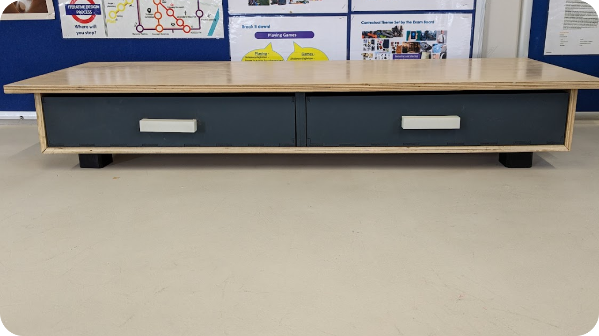
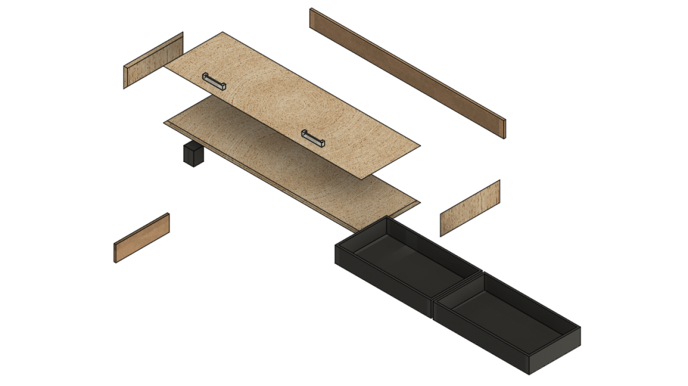
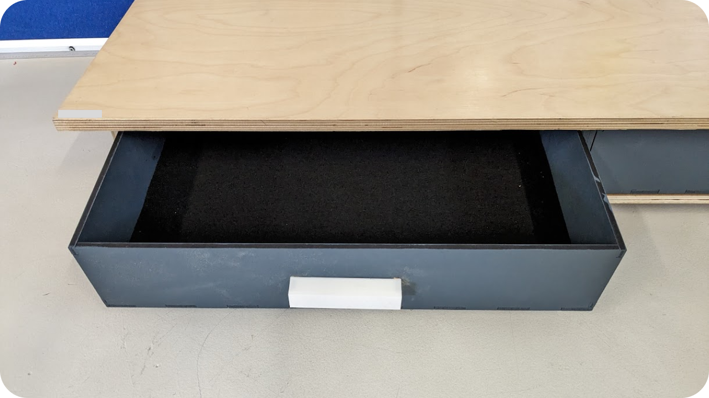
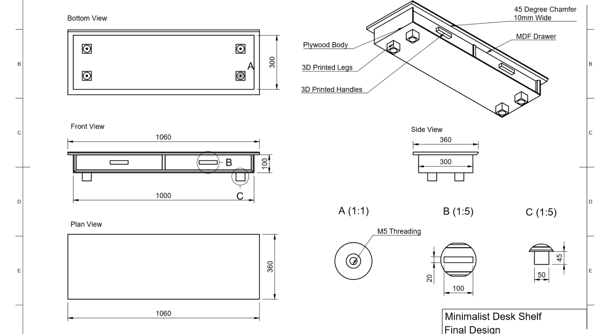

A minimalistic desk shelf for storing all of your essentials at an arms reach, designed in Fusion 360 with files made available on github.

Figure 1: Desk shelf rendered in Fusion 360
Desk2 is designed as an oversized desk shelf to fit all of your essentials in front of you while you work. The shelf features two slide out drawers, that are felt lined to protect your valuables inside. A sturdy outer shell provides additional protection while also serving as a stable resting place for your monitor, allowing it to be raised for better ergonomics.
Figure 2: Drawer in use, filled with various electronic components
Spanning just over 1m wide, with it's large proportions, this desk shelf is especially well suited to large desks and gaming setups, where it will fit it perfectly, even when using two monitors side to side. At 30cm deep, the shelf will leave ample room on most large desks for your acsessories, keyboard, and mouse.

Figure 3: An early photo of Desk2 configured with 2 monitors
Desk2 was designed with the principle of a desk for your desk firmly in mind, creating a desk shelf that is unique in both scale and design from others currently available on the market.
Desk2 is made from a variety of different materials. The outer shell is made from birch plywood, chosen for it's strength, aesthetic, and affordability. The surface is finished to a shine through careful surface preparation, varnishing, and a top coat of beeswax, which helps to also protect the surface from scratching or staining.
The drawers are made with the help of a CO2 laser cutter and MDF sheets. This allows for the drawers to be cut to tight tolerances quicker that any person could do by hand. The individual pieces were then given 3 coats of petrol blue emulsion paint, and clamped together to dry. The felt for the drawers were cut from the laser cutter too, though with a greatly reduced power and increased speed.
The dividers and backing were made from MDF too, and exactly in the same way as the drawers, though the backing is made from two smaller pieces that interlock to fit them onto smaller size laser cutters.
The handles and legs were made from white and black pla respectivlely, and the files to make them were exported directly from Fusion 360, then manufactured on a Flashforge Adventurer 3 3D printer.
Figure 4: An exploded view of the desk shelf, rendered in Fusion 360
The result is a design that is somewhat minimalistic, or at the very least tasteful, that incorporates sleek finishes, and seamless joinery, thanks to the dowel, mitre and finger joints, combined with recessed bolts for holding the legs and handles in place
Figure 5: An upclose view of one of the felt lined drawers
Unsurprisingly, Desk2 is not for sale. It is quite literally a high school project, and there are some issues with the fit and finish of the final product, not to mention the difficulties that would be associated with mass producing, or even just batch producing an item that was not designed with doing so in mind
Instead, I have figured that the best approach is to make the design files available online for anyone who wishes to replicate this project, or to add their own spin on it. As such, all of the files, including CAD files and a PDF doccumenting in detail how it was manufactured, and some specific problems encountered with making it.
While I would have liked to release this under more permissive open-source licenses, I have not been able to out of risk mitigation. This project has been submitted to a GCSE exam board for marking and the final subject grades have not yet been released to candidates. This means that I need to have some control over the files distribution, such as the requirement for attributation and ban on commercial usage. These ensure that if a dispute arrises as to if my work is original, I can use this website, and attributation to my account as proof of authorship. The specific license used is the Creative Commons CC BY-NC 4.0 and more information can be found on their website.
Figure 6: Schematics available on Github, rendered in Fusion 360